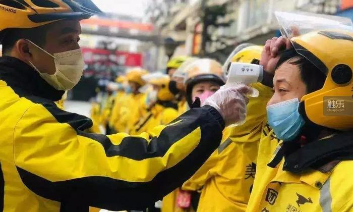
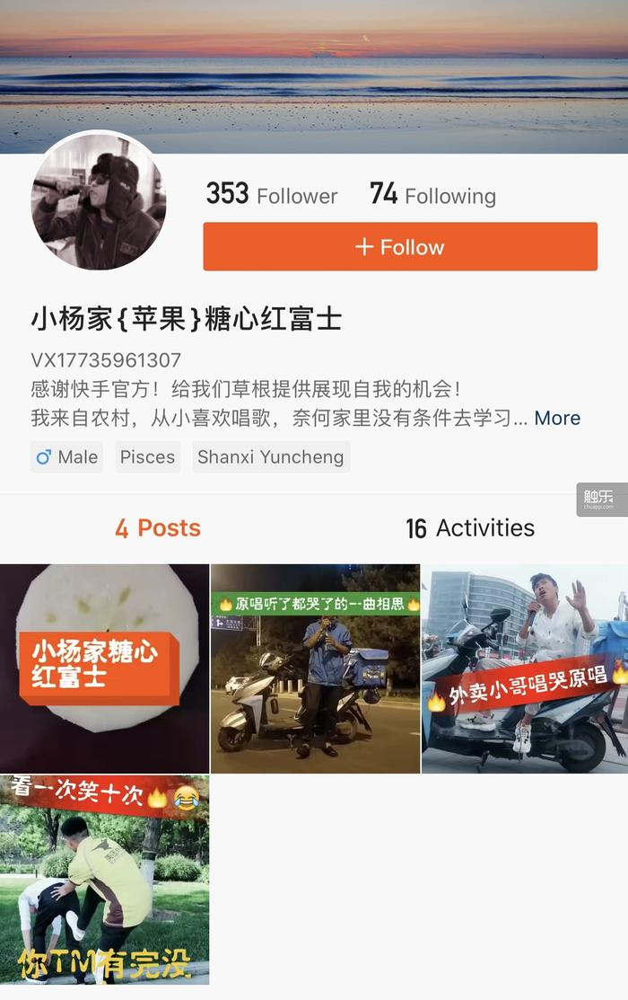

一只口罩的利益之旅
原文链接 备份链接 文/谢如颖 编辑/杜强 自从新冠肺炎证实人传人以来，各类口罩——尤其是医用防护口罩（N95）——的全国性脱销似乎只在一夜之间。 一位业内人士告诉《时尚先生 Esquire》，全国的口罩产能在 1480 万左右（自国家发 …
“我来了这一个月，感觉什么狗屁没弄下来，这会儿回去也不方便。感觉很那个啥……心里很不得劲儿。”
_编辑_池骋2020年03月02日 15时00分
《死亡搁浅》？我没玩过。那是啥游戏？送快递的？哦……我还真没注意，那回头我下一个试试。
我玩的游戏是《新剑侠奇缘》，我在里头当指挥，指挥100多个人的家族……不能挂机，你说我当指挥能挂机不？我一有时间就玩。我在这个游戏里边也是有点名声的，好些区都走过，打得好，被朋友喊过去帮忙，给他打到第一，我就换个区。再打到第一，再换一个区。
你都有什么要知道的？但凡我知道的，肯定都跟你讲。我老家是山西运城的，临猗县三管镇陆喜营村……这个地址你需要吗？我编辑一下发你。年龄跟姓名也要吗？好的。
我以前就在北京送外卖，送了两年多，去年6月份回了趟老家，春节前想来北京再干上一个月。我跟同村的一个哥合租，住在红寺村。村子里都是一些外地人租着，也不冷清，好多人都没回去。
我本来就打算待一个月就走。老家那边媳妇快生了，得坐月子，我着急回去。本来跟她说好的正月十五，但因为疫情的关系又拖了几天。她在家里边委屈得哭哭啼啼，整得我心里也不好受。我老家那边发通知了，说是不让返乡。我打了电话，找了门路，人家说在北京开个健康证明就能回去。回去也不太远，坐高铁的话，5个半小时就能到运城北站。正常情况下，坐公交或者拼个车到县城，然后再倒个公交到村里。这回得抓紧时间，因为村子晚上6点就封了。

“其实飞机比高铁、动车都便宜，但去北京机场路太远了。”
因为以前干过两年，我知道冬天，尤其是春节期间外卖这一行挺挣钱的。夏天就不行了，夏天是淡季，最低的单价才4块8毛钱。夏天的话，你好好跑，早上五六点起来，跑到晚上十一二点，估计能跑400多500块了不起了。就这么玩命干。冬天有天气补偿，每单可以补贴两块到三块，最低的单也不低于6块3毛钱，高峰时期，每一单保底再加两块钱，这么算下来，一天可以赚700块。
是，北京生活成本是高点儿，但是自己省一点的话还是能攒下不少。吃饭带房租，乱七八糟的，一天100块钱。这个不多。攒下来的钱我自己身上只留一点，怕有个啥急事要用。有时候要帮顾客买个饭，有时候车子磕磕碰碰，都得花钱。剩下的都寄回家了。在老家那个村子里，我这收入水平就一般般。所以过年在家闲着也是闲着，还不如出来那个啥，是不？咱这个年龄了，过年也没有小时候那么开心，总感觉一个老爷们在家里边不合适，对吧？要做点事儿，不能闲着。
我记得是我来北京后三四天才有的疫情。感觉新闻都还没怎么报，北京这边的口罩就缺货了。刚开始跑的时候，接的单子上口罩、吃的之类的都有，到后边全是口罩，没有什么吃的了。单子上的东西都挺贵的，一个口罩加一个护目镜，我看了一下，135块5。N95口罩嘛，好口罩，不是咱们戴的这种普通的。

“我们送外卖的基本上都是以保暖为主。棉口罩外加一个帽子，给自己脸鼻子嘴捂得严严实实，就露俩眼睛。”
不管多远的单子都有，有二十几公里的，就为了买个口罩。后来新闻上说双黄连口服液有用，双黄连一下就缺货了。有些人不惜花高价让我们骑手帮买，但根本就买不到。
没过多久，小区也开始进不去了。个别小区白天进不了，晚上可以进。刚开始有的小区不让进，我也不知道，直接骑进去，人家保安让出来。出来就出来吧，但有的保安说话不好听，有时候难免叨叨那么两句。后来我都不进小区，快到的时候就给顾客打电话，让他们出来拿，这样的话单量少了很多。人家要点外卖，就是为了让你能送到门口，你说送不过去……对吧？
我哪儿都送，最经常跑的是南三环到东三环这一带，这里的小区我一般用不着导航，基本上各方面都知道，直接就过去了。这段时间很多路都封了，每隔一段路就有个岗哨，有人在那儿挡着。量了体温填了表，车也不能骑进去，人只能走着进去，可麻烦。而且很多路导航能导过去，但实际上不通，你都走一半了，一看路不通，又得折回去重新找路，走着特别费时间。我经常在大半夜送东西，晚上乌漆麻黑的啥也看不见，有时候导航给你导到犄角旮旯里面。遇到这种情况只能跟顾客打个招呼，一般都会同意让我提前点个“送达”。特殊时期，大家都挺好说话。
那天早上跑夜班，跑到凌晨4点多的时候，我一下接了6单，都是同一个早餐店的，结果取餐的地方路口封了，也是车不让进，要先量体温、填表，然后人走进去。我走了几百米，到里边才发现商家是关着的……但它在平台上一直保持接单发单的状态。我站在那儿给商家打电话，打了三四十个电话没人接。
遇到这种情况就得向平台报备，照个相确认商家关门了。但当时4点多，天还没亮，我又报备不了。我只好挨个给顾客打电话，给顾客都说好了以后，开着闪光灯勉强拍了几张照片。照片不清晰的话，人家会判你虚假报备……一个虚假报备会扣50到200块钱。
我从4点多耗到早上7点才把这个事儿处理完。这两三个小时就相当于没跑，没挣到钱。当时特别生气，因为我那会儿在冲单，就差这6单，我就可以领到168块钱的通宵奖了。结果全耽误了，自个儿还冷得要命，跟个傻子似的。一天跑回来，脚都没感觉了。
我感觉今年跑单人数比往年要多。很明显，因为往年单出来了没有什么人抢，你可以放心地挑自己想跑的，今年很多单出来直接就被抢跑了。大家都以为今年年景挺好，就回来送外卖了，结果遇到疫情，猝不及防。单少了，人没少……困住了，对，相当于说大家都被这个事情给困住了。
以前单子多的时候，整天都在外面跑，一般上午9点多10点出去，下午两三点回来睡个觉，晚上9点多10点再出去，跑到凌晨四五点。也有的时候从上午9点多10点一直跑到晚上10点。这样跑一天下来能跑掉两块电瓶，也就是跑大概300公里，近单能接个30多到40单，长途的话能接个一二十单。
这几天不行了。像今天就特别少，全是小近单，也就20单左右，有时候都不到20单。一白天都在外面跑着，也跑完了两块电瓶，但就跑了200来块钱，干得属实是累。平台补贴？没啥补贴，就是平常那些奖励，问题是像今天这样跑，单量根本冲不上去，达不到奖励的标准。所以这会儿在外头跑外卖的少了很多，很多人出去就在外边坐着。没有单，谁也没有办法。
我来了这一个月，感觉什么狗屁没弄下来，这会儿回去也不方便。感觉很那个啥……心里很不得劲儿。
你要说凄凉的话……是有点儿？特别是晚上，到了街上，红绿灯跟前一个车没有，根本都不用等红绿灯了。整条大路就你自己一个人骑电动车在跑，一个人没有，一个车没有，就那个样子。
其实我也感觉不到什么凄凉，因为一门心思都在赶时间。这会儿没车了，我骑得贼快，就没啥好凄凉的。反倒是每年春节过完以后，北京堵的那时候，到哪儿都是车，都是红绿灯，还不如过年这段时间呢。咱送外卖的，都是争取第一时间送过去，让人能吃上热乎东西。有时候交通乱七八糟的，有时候导航错了，有时候找不着地儿，各种各样的原因……其实吧，每个送外卖的心里都是这个想法，都想以最快的速度把东西交到顾客手上，没有一个不是。他难道不想提前送过去吗？超时得罚钱。再说了，这一单不结束下一单也开始不了。你干得越快，你就越能多接几单。所以我们送外卖，逆行、抄近道、闯红灯都是常有的事儿。有时候也会被逮到罚款，但是为了赶时间，你有很多不得不去做的事儿，你知道吧？
这段时间大家都难。我在接订单的时候也看到过，有的顾客给我们写的备注是，“我实在是饿得不行了，你只要能给我送过来，多晚都行”。因为有的地方封锁了，实在进不去，或者得绕上一大圈，骑手都不愿意接这种单。看到这种情况，我只要手上没单，都会尽力给他送过去。人都已经这么说了，对不对？属实是难。你以前看谁这么点过外卖？没有。现在是特殊时间，必须得特殊对待。

“我们也算是前线的人吧？”
反正最近单子也少了，只要不是特别过分的要求，我都尽量去送。有让我带包烟的，有让我带点日用品的，都是顺带脚的事儿，顾客到那儿也挺感激你的。本来也不求打赏什么的，人要多给点儿，感觉还挺不好意思的。
我印象比较深的一个事儿是，有天夜里11点多，在方庄芳古路附近，我正送外卖，碰到一个姑娘拦车。她在路边跟我招手，我就停下来了。她声音带着哭腔，说大半夜的太冷了，手机都冻关机了，打不着车。我问她去哪，她说了一个小区，刚好也不远。她说你可以载我吗，我说可以，没什么不可以，你要不怕我的话，你这个小区我知道在哪，我送你回去。她说，你不怕我得了那个病吗？我说，我年轻抵抗力好，不怕。
路上我去顺道取了个餐，刚好有个超市，她说她饿了，还没吃饭，我说那怎么办呢，她说想去超市买点东西。我说你有钱吗，她说有，但她手机关机付不了账，我说我给你垫呗，就给她垫了25块钱，最后给她送到小区门口。她让我加一下她微信，回去了她给我转账，我说行吧，就加了。
后来她到家里边给客服打了电话，客服又找到了我，说她要送我锦旗。我说不用那个东西。大过年的，路上不管是男的女的，碰到能帮就帮一把。我跟她说你要过意不去，把超市垫的那二十几块钱整我就行，我送你这一趟就是顺带脚的事儿。然后她给我转了个88.88。我一看，嘿呀，转还挺多……我挺不好意思的。本来就是一个举手之劳，人家又是送锦旗，又给你一个88.88，你也就垫付了25块钱而已。
我以前也遇到过这样的情况，出于好心给人家垫了钱，完事回去联系不到人了……就被骗过一次。你问我还会不会选择相信别人？也不是相信不相信的问题。我就想，你有这几十块钱也富不了，少这几十块钱也穷不了，对吧？全当帮人一次的，也没啥。
大年三十那天晚上我也跑了，跑到半夜，12点多我跟我同村那个哥找了个地儿吃饭，一人吃了碗兰州拉面，还点了一把烤肉串，想着过年咱也多吃点肉。平时吃的话就一碗面，越便宜越好，哪儿便宜搁哪儿吃，哪儿经济实惠搁哪儿吃，能吃饱就行。
那天去的时候店里还有很多人，全是男的，一桌一桌坐着，吃饭喝酒。叫我们骑手坐那儿，我们也不好意思凑热闹，都是去找个门口，犄角旮旯地儿，坐那吃吃。因为我总感觉穿着这衣服……干外卖这一行，很多人心底都有点瞧不起这个职业，所以咱们也自觉一点。其实所有送外卖的基本都是这样，除非像一些饭馆给我们骑手有打折优惠，一到打折那个时间段，店里全是骑手。那会儿就能随意坐了，没有压力。
咱这大过年的不在家里边，心里本来也就空落落的。过年期间一般餐送到以后，顾客都会说句新年好，咱心里也暖。好的商家？也有。我上次去了家炸鸡店送外卖，人商家给了一份炸鸡柳炸鸡腿，一大份。人家说，过年期间都不容易，所有骑手到我这里接餐都给。我看着那一份也不少，少说也得三四十块钱。你说商家平时有个活动也常见，但这会儿特殊情况，大多商家都关门，这边人家还给你一个这个……我感觉心里暖暖的。
是，很多人都有点瞧不起送外卖的，我觉得干这行有点儿被孤立的感觉，所有人都觉得这是一个风吹日晒跑腿的活儿，门槛低，什么人都有。像我跟你说的，小区不让进，让保安给赶出来，这种事儿在我和我朋友身上都发生过。你好好说的话双方都理解，对不对？你直接骂人就不好了，你也是个干保安的，工作性质都是一样的，都是靠自己努力在挣钱。你说敲门给人送餐，你门也不开，或者开开露俩手指头，拿去以后“夸嚓”一摔就把门关上了，咱心里也不好受。
总归这一部分人比例占得不大，不到20%吧。大多数都是好人。一多半人都会说“辛苦了”“谢谢您”之类的，疫情期间有点麻烦事儿，你跟顾客说一下，顾客也理解。人和人之间能更加互相体谅？是，反而感觉还行。这段时间虽然挣钱少了，心情还不错。

“下雪天是不跑的，电瓶车滑得厉害，一刹车就倒了。”
你问如果再给我一次机会的话来不来北京？说实话，如果不是家里边媳妇这事儿的话，我也不着急回去，在北京等这疫情结束了，我再回去也来得及。这段时间属实北京没什么单，但也能跑，我也愿意配合疫情的这个工作。
这次回老家以后，我一有空就会回北京来。去年6月回老家是因为什么呢，一个是我媳妇怀孕了，她以前也跟着我在北京，怀了孕就回了老家；另一个是我被人偷了一回餐。当时是半夜3点多，我到小区里送餐，一个28楼的小区，我现在都记着那个门牌号：22308。当时箱子里有5份餐，我提了一份上去，送完以后下来，箱子里一份餐都没有了。那会儿我还没发现，到了下一个送餐地点拿餐的时候，打开箱子一看，什么都没有了。我只能挨个给所有顾客打电话，跟他们说很抱歉，让您久等了，这个餐被偷了，我也没招儿，多少钱我原价赔付给您。
顾客买餐一般都有打折券的，但因为让人家等了很长时间，咱也不好意思，咱都是按原价赔偿人家。我被偷了大概300多块钱的餐，前前后后赔了500多块钱。我也报警了，去了派出所，警察让我回去等消息，到后边也就不了了之了。
这些的事儿就让我感觉很无助。这么大的一个城市，没有自己的一席之地。所以我才会有时间就玩玩游戏，不然你回到家，屋里边空荡荡的，一个人窝着，感觉一般人受不了这个。老想着家里边什么样子，过得顺不顺畅，感觉有心无力，使不上劲儿。是，家里边人是要我在外头挣钱，但家里边人也要你在家里边陪着他们啊。
之后媳妇生了小孩咋办？哦，我在老家工地上还有个开大吊的活儿，就是工地上特别高的、上面可以转过来转过去的那种车。简单来说就是盖房子吧。在那里干活的话，每天晚上都可以回家。等工地上有了空档期，我会再来北京。那个时候媳妇基本上就可以自己看小孩了，我就可以跟往常一样，该挣钱挣钱，该干嘛干嘛。
哦哦，没啥问题了是吧？生活照好像没有……我都处理掉了。我手机平时玩游戏嘛，有点儿卡，所以我没事老清理内存，把东西都删完了。我快手上有段子，送外卖时候拍的一些段子，你要不要？就两个，一个是穿了工作服的，一个是没穿工作服的……可以发出来，没事。

他的快手帐号
（题图及部分文章配图来自网络，与本文无关。）
原文链接 备份链接 文/谢如颖 编辑/杜强 自从新冠肺炎证实人传人以来，各类口罩——尤其是医用防护口罩（N95）——的全国性脱销似乎只在一夜之间。 一位业内人士告诉《时尚先生 Esquire》，全国的口罩产能在 1480 万左右（自国家发 …
原文链接 备份链接 摘要：新型冠状病毒肺炎袭城之后，外卖员老计（化名）觉得武汉的马路变宽了，武汉人的面目也温柔下来。大年初一，他给武昌医院的医生送了一餐鲍鱼饭。才华街友谊大道路口的药店口罩卖完了，消毒液还有少量存货，他秒发微博，广而告之。 …
原文链接 备份链接 2020年1月23日凌晨2点，武汉市宣布自10时起交通封城，尽管很多人还在睡梦之中，在8个小时的窗口时间内，仍有很多人选择连夜出城。更多的人，则留了下来，有的人别无选择，有的人则担心自己无论去哪里都是潜在的传播者。一位 …
原文链接 备份链接 她希望疫情快点过去。咳嗽时身边的人不再躲闪；出入小区时不用再带上好几张证件；每天早上开门时，第一眼见到的仍旧是对鸡蛋“虎视眈眈”的大爷大妈。 配图 | Sipa图片社 程姐是我几年前在江苏超市做收银员时的同事。她做事勤 …
原文链接 备份链接 复工第一天，我的自行车被偷了，证明各行各业确实都开始复工了。 复工第二天，我惊喜地接到了骚扰电话，说明人们的精神需求在不断恢复。 经历一个超长的假期，不少人重新回到了工作岗位，虽然和一个月前相比还是去一样的地点，做一样 …